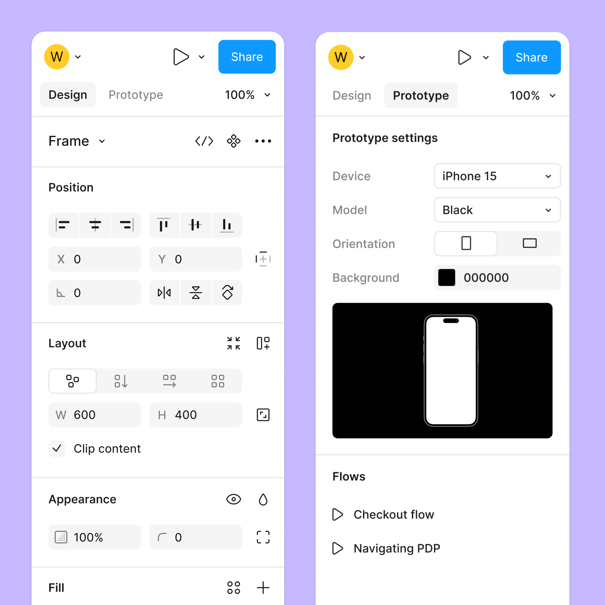
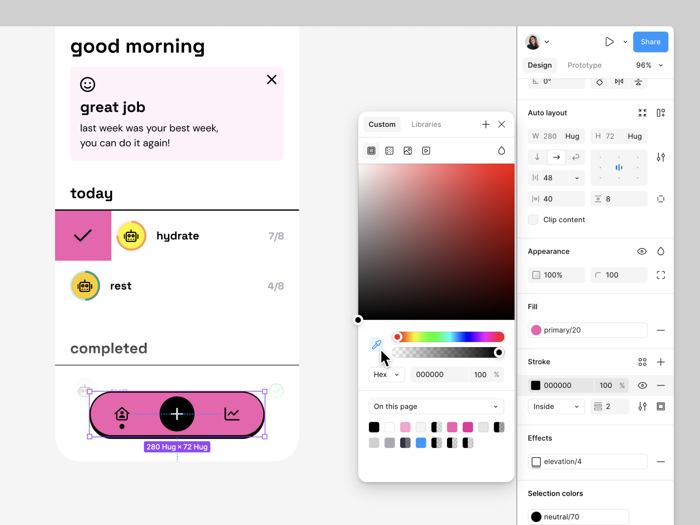
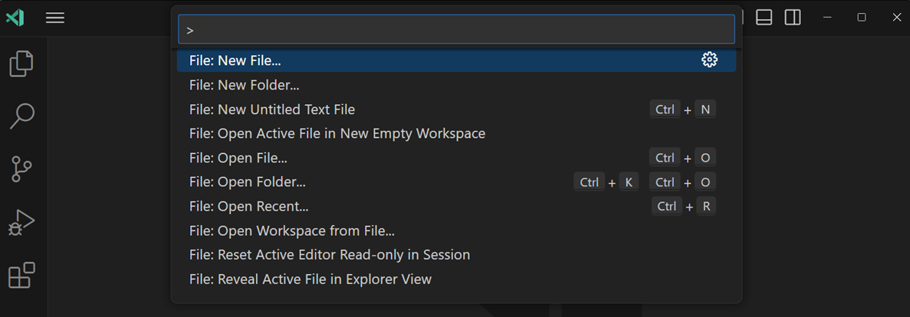

界面分层，是通过区域、前后关系和操作范围组织数字工作空间的方法。背景提供环境，面板容纳持续使用的内容，浮层承载临时操作，模态对话框让当前工作暂时转向一个需要单独处理的步骤。
这个问题同时属于交互设计与 UI 视觉设计。交互设计决定表面何时出现、允许操作什么、结束后返回哪里；视觉设计用位置、色阶、边界、遮挡和动效表达这些关系。两者结合，才能让用户看懂正在处理的对象，并连续完成工作。
以 Figma 为例，选择画布对象、在属性面板修改参数、打开颜色选择器、从画面中取色，是一段连续操作，却涉及几种不同的空间关系。理解这些关系，比单独研究面板的圆角或阴影更接近实际设计工作。
一、分层需要同时处理区域、深度与操作范围
区域解决内容在哪里。文件列表位于侧边，画布占据中间，属性沿另一侧排列。它们可以同时存在，用户通过位置建立分工：在哪里找对象，在哪里观察结果，在哪里修改参数。
深度解决谁覆盖谁。下拉菜单盖住页面的一部分，颜色选择器位于画布前方，拖动中的对象压过其他对象。这些重叠关系使二维屏幕产生前后感，也让人知道哪些内容是后来出现的。
操作范围解决当前允许做什么。颜色选择器打开时，取色操作可能还需要指向画布；模态对话框打开时，背景操作则被暂时限制。两个表面即使都有白底、圆角和阴影，也可以承担完全不同的行为。
这三个维度需要分别确定。增加投影只改变视觉深度，不能自动阻止背景点击；设置遮罩也不能自动安排键盘焦点。一个表面看起来已经接管界面，输入却仍然落在背后的页面中，说明视觉与行为没有对上。
空间层级也不等于信息重要程度。主标题比正文重要，通常用字号、位置和间距表达即可；常用按钮比辅助操作重要，可以通过颜色和排列区分。把重要内容都变成浮层，会让工作区不断被遮挡，原本的信息优先级反而变得难以阅读。
设计时可以先沿任务画出关系：主对象是什么，哪些信息必须同时看，哪些操作只出现片刻，哪个步骤需要独立提交。由这些关系选择容器，再确定外观，能够避免把“看起来像工具软件”的面板结构直接套在业务上。
例如，处理订单时，订单列表、客户资料和处理记录可能需要反复对照；修改一项标签只需要短暂选择；提交退款则涉及金额、范围与后果。三种任务的持续时间、参照需求和提交方式不同，空间安排也应随之变化。
二、Figma：画布与属性面板构成持续的编辑回路
Figma 的设计文件把导航、画布、属性和工具分配到不同区域。画布是工作对象所在的位置，右侧属性区域随选择状态提供设置；没有选中对象时，展示页面相关选项，选中图层后则提供位置、尺寸、填充等属性。1 2
这里有两个相互配合的稳定性：属性区域的位置稳定，属性的对象归属随当前选择变化。用户换一个对象，不必重新寻找设置入口；留在同一个对象上，又可以不断调整数值、观察结果。

图1：同一侧的属性区域容纳不同工作模式。左侧为 Design 中的对象参数，右侧为 Prototype 设置。来源：Figma 官方帮助。
假设设计师正在调整卡片宽度。需要判断的并不只是数值是否正确，还包括文字有没有换行、卡片与邻近元素的关系、整体密度是否合适。属性输入与画布结果需要反复对照。把设置放在持续可见的侧面，能够让这两类信息共同留在工作空间里。
如果每改一次宽度都打开居中的对话框，遮住卡片，再关闭检查，操作就会变成“打开—输入—关闭—观察—重新打开”。这是一种可以从流程直接推导的额外切换成本。并排面板则支持“观察—修改—再观察”的短回路。
并排也有代价：它占用画布宽度。属性越多、面板越宽，剩给工作对象的空间越少。因此，常驻区域需要优先容纳反复使用且与当前选择强相关的内容；低频、复杂或与整个文件有关的设置可以另行组织。不能因为某项设置属于产品功能，就全部塞进同一个侧栏。
面板内部还要区分对象识别与具体参数。对象类型、名称或选择范围帮助用户确认正在改谁；分组标题帮助定位要改什么；输入框承载具体数值。若这些层次混在一起，用户即使找到了控件，也可能在错误对象上执行正确操作。
这也是属性面板与普通表单页的差别。表单通常围绕一个相对固定的记录展开，属性面板则经常随着外部选择更新。两者外观可以相似，但后者更需要处理未选中、多选、混合值和对象切换。容器既承载信息，也持续说明这些信息属于谁。
应用到业务产品时，应先判断是否存在同样的编辑回路。图片裁剪、商品属性核对、排班调整，都可能需要对象与设置并排；一份只填写一次、填完提交的长申请表，则未必需要持续占据侧边。参考 Figma 的价值在于识别任务关系。
三、表面外观把持续区域与临时表面区分开
背景与面板之间的色差，首先帮助划分区域。灰色工作底层与白色内容面板，让人辨认环境和承载内容的表面；间距和边界进一步标出容器范围。一个白色区域即使没有投影，也可以通过这些线索形成清楚的分组。
容器范围会参与功能解释。几项输入被同一面板包住，底部配置一个保存按钮，用户容易把它理解为一次共同提交。如果按钮实际只保存其中一小项，就需要重新安排分组，或在具体操作旁说明提交范围。视觉上的归属应当对应数据上的归属。
投影主要表达表面与底层的分离。图1中的常驻属性区域主要依靠分隔线和内容分组建立秩序；下一节的颜色选择器则在画布前方出现，周围投影强调了临时覆盖关系。即使两者底色相近，也能从边界与遮挡方式识别角色。
阴影不宜承担全部层级。过大的模糊范围会污染相邻内容，多个面板都使用同样强的阴影，也会使每一块都像独立悬起的对象。长期并排的区域可以主要靠底色和分隔线区分，把较明显的阴影留给真正覆盖内容的表面。3
深色主题中，单靠黑色投影往往难以清楚区分表面。较亮的面板、细边界和背景变化可以共同承担分层。4 色差需要与文本、图标和状态一起观察：面板边缘清楚了，若内部文字对比不足，仍然无法支撑长时间工作。
VS Code 的工作区提供了一个具体对照。后文图3中，侧栏、编辑器和底部面板主要靠相近的深色表面、区域分界与稳定位置组织；图4的命令面板则通过独立轮廓和投影从背景中分离。层级表达依赖一组线索，而不是把浅色主题的黑色阴影机械地加深。
圆角也要放回这个关系中理解。它能帮助连续地识别表面轮廓，但圆角大小本身不能说明一个面板是否可拖动、是否模态、关闭后是否保存。若产品中的所有容器都采用大圆角和强投影，却没有明确的行为差别，就只有一致外观，没有可理解的空间系统。
当背景是照片、地图或画布时，表面还需要抵抗背景变化。半透明可以保留环境线索，但亮暗不均的背景会影响文字阅读。需要精确输入的属性区、金额确认或长文本编辑，应有足够稳定的承载面。透明程度应由内容可读性和参照需求共同决定。
四、Figma 颜色选择器：局部覆盖要保留参照关系
在 Figma 中，可以先选择图层，再点击某项颜色属性的色块打开颜色选择器，并使用吸管从当前页面取色。被修改的对象与提供颜色的对象可以是两个不同对象。5

图2：画布中的选中轮廓、右侧属性与前景颜色选择器同时可见。选择器覆盖部分画布，但没有把整个工作空间遮住。来源：Figma 官方帮助。
图中左下方粉色导航区域有紫色选择轮廓，右侧是对象属性，中间偏右的颜色选择器位于画布前方。三者分别回答三个问题：修改谁、修改哪项属性、有哪些候选值。空间安排把这些信息连接在一起。
颜色需要放在实际组合中判断。同一个粉色与白底、黑线和黄色图标组合时，关系不同；仅看选择器中的色块无法判断完整效果。保留画布，可以让人比较色值变化与整体效果；使用吸管时，画布本身又成为输入来源。
因此，这种局部浮层需要为参照对象留出位置。如果选择器恰好挡住待修改按钮或要采样的图片，用户就要拖动画布、移动浮层或先关闭它，才能完成判断。尺寸、初始位置和必要的移动能力，应围绕真实内容安排。
浮层与触发入口的联系同样重要。它靠近属性色块出现，用户更容易理解正在编辑填充、描边还是其他颜色。若不同属性打开的选择器总出现在遥远且固定的位置，来源关系就需要由标题、选中状态或其他提示重新补足。6
取色还说明了“限制背景操作”的细度。画布中的颜色可以成为输入，但原本的目标对象需要保持明确。系统必须区分“从这里读取颜色”与“把这里选为新的编辑对象”。两种动作使用相似的点击，却属于不同操作状态。光靠浮层的外观无法表达这个区别，还需要光标、采样提示和目标选择状态配合。
同类关系也出现在地图选点、图片裁切和文字格式设置中。地图是地址输入的参照，图片是裁切边界的参照，正文是字号与行距的参照。临时工具的设计要同时保留控件与判断效果所需的信息。让人看到结果，是局部操作能够连续进行的条件。
五、VS Code：常驻面板与命令面板服务不同的时间尺度
VS Code 的工作区包含编辑器、侧栏、活动栏、状态栏和用于终端等内容的面板。编辑器可以分组并排，面板也可以按工作需要调整位置。7

图3：文件树、两个编辑器组与终端同时存在。可以直接看到文件选择、内容阅读与命令执行各自占据的位置。来源：VS Code 官方文档。
图中左侧用于浏览文件，中间与右侧打开不同文件，底部显示终端。这些区域不只是把功能分到几个方框里，还支持信息在区域之间流动：从文件树进入文件，对照代码与配置，在终端执行命令，再回到编辑器修改。
当工作需要反复读取终端输出时，让它与编辑器并排存在，可以保留参照。若输出每次都在临时对话框里出现，用户就要记住报错信息再回到代码中查找。持续面板把部分记忆负担转为屏幕上的可见信息。
但持续显示不代表所有面板都应一直展开。终端需要高度，文件树需要宽度，两个编辑器组也需要足够空间。打开多少辅助区域，应取决于当前工作的依赖。区域可调整，才有机会在参照能力与主内容面积之间重新分配资源。
命令面板采用另一种关系：用户输入关键词，筛选并执行命令。图4中，它位于前景，包含输入、候选项和快捷键。任务重点是找到一个动作，选定后再继续原来的工作。7

图4：命令面板提供一次短暂的动作检索。它无需像终端一样持续占据固定区域。来源：VS Code 官方文档。
将命令面板也做成常驻侧栏，会长期消耗空间，而多数时间里面没有需要参照的内容；把终端完全改成一次性浮层，又可能破坏反复查看输出的过程。两者的差别在于任务的时间结构：一个需要持续伴随编辑，一个短暂出现以完成动作选择。
这种区分可以用于业务后台。审核记录、实时校验结果可能需要与对象并排；“切换工作区”“前往某张报表”等动作更适合临时检索。决定常驻还是浮现，应观察用户是否反复回看其中的信息，以及信息是否参与当前判断。
六、模态对话框为独立步骤建立提交边界
模态对话框打开时，背景暂时不参与操作，键盘焦点进入前景；关闭后，焦点回到触发入口或其他合理位置。8 这使一个局部步骤获得相对独立的操作范围。
这个范围适合承载需要集中完成的输入或决定。例如，给新建资源命名、填写一组必须共同生效的参数，或确认不可恢复的操作。对话框的标题说明当前任务，内容提供决策依据，主要操作说明提交的结果。
Figma 的取色流程中还包含一个具体分支：将采样颜色创建为颜色样式或变量。用户进入创建对话框，填写信息并执行 Create，再把新资源应用到选中的图层。5 取一个颜色值与建立一个可复用资源，已经是不同的任务范围。
这里可以看到临时面板进一步变为独立步骤的理由。单纯调整颜色，需要反复看画面；创建样式则增加了命名、类型和资源归属等问题。把这些输入组织为一项明确提交，能够区分“当前对象的外观变化”与“新增了一份可继续使用的资源”。
实际业务中的退款确认也有类似结构。列表中点击“退款”，只说明动作来源；最终提交前，还要说明订单、金额、退款对象和结果。对话框必须带入足够信息，使用户不用退出确认去重新查找依据。
如果确认需要查看大量历史订单、逐项对账、比较附件，对话框就可能过小。把它做得更大只能暂时缓解空间问题，不能解决任务复杂度。此时更适合进入独立处理页，或采用可持续并排查看的工作区。模态是否合适，取决于这一步能否在清楚、有界的范围内完成。
对话框内部的操作层级也应对应决定本身。主要按钮明确写出动作与结果，例如“提交退款”，比一个脱离上下文的“确定”更容易核对；取消应能够回到此前状态。若存在两种同样重要的业务选择，需要分别说明后果，不能仅靠一个深色按钮替用户预设答案。按钮的视觉权重与决策结构需要一致。
关闭规则也要与数据状态一致。即时生效的颜色调整、尚未提交的退款表单、已经创建的资源，不能共用含糊的“关闭就取消”说明。需要分别确定：关闭只收起工具，还是放弃草稿；提交后是否可撤销；网络失败后输入是否保留。
七、分层方案需要维护对象、数据与返回位置
用户在层之间移动时，工作仍然围绕原来的对象继续。打开属性、选择颜色、处理确认、返回列表，这些界面状态都需要指向明确的对象。图层前后关系清楚，只解决了其中一部分问题。
第一项是对象身份。列表选中订单 A，详情面板也应显示 A；多选之后，面板需要表达当前范围；某些字段有多个不同值时，不能继续把其中一条的值显示成全部共有。标题、选择轮廓、数量和字段状态应共同说明操作对象。
第二项是数据状态。面板里的修改是立即生效，还是暂存到提交？界面是否允许切换对象？切换时，旧对象草稿保存在哪里？这些决定会直接影响用户是否敢继续浏览。一个看起来轻量的侧栏，如果悄悄丢弃输入，会使人把每次切换都当作风险。
第三项是异步结果归属。用户从 A 切换到 B，A 的详情请求可能更晚返回。若面板仅接收最后到达的数据，就可能出现 B 被选中、A 的信息却显示在面板中的情况。设计交付应明确加载与对象切换状态，研发则需要让返回数据与请求对象对应。
第四项是返回位置。关闭大图后，应回到此前浏览的缩略图附近；结束一项处理后，应知道列表是否仍保留筛选、滚动与选择；被处理对象消失时，要把焦点交给仍然存在的合理对象。恢复到列表顶部，往往会打断批量工作。
这些状态需要放在同一段流程中验证。只看“抽屉打开”的静态稿，无法发现关闭后滚动位置丢失；只看保存成功的截图，也无法发现成功反馈指向上一条记录。连续操作、快速切换和失败恢复，才能检验层与层之间的衔接。
动效也服务这个衔接。侧栏从边缘进入，可以说明来源；局部浮层在入口附近出现，可以维持关联。动效进行期间仍要允许合理的下一步输入，并避免新对象出现时短暂显示旧对象参数。减少动态效果时，仍然需要保留清楚的状态变化与返回位置。
八、从产品案例转到业务：订单审核工作区的分层推导
以下用一个假设的订单审核后台说明如何应用。工作人员需要连续检查订单，核对客户与商品信息，查看风险记录，对少量订单追加备注或发起退款。目标是减少重复查找，并保证处理对象与结果清楚。
先把任务中的依赖列出来：审核结论需要同时参照订单与风险信息；备注通常只有短文本；退款涉及金额和后果；订单处理完毕后，需要继续下一条。由此可以推导出不同的空间需求，而不必先决定“做一个抽屉风格的后台”。
订单列表提供队列与上下文，详情区提供当前对象的信息，风险记录需要在审核时持续可见。这与 Figma 的对象—属性关系、VS Code 的内容—输出关系相近：判断依赖两处信息反复对照。因此，宽屏上可以采用列表与详情并排，再把风险记录放入详情中的稳定区域。
如果为了保留宽表格而把详情做成覆盖式抽屉，需要进一步检查：被遮住的列是否正是审核依据，用户是否还需要比较其他订单，切换对象是否方便。覆盖关系的收益是避免整体布局压缩，代价是被覆盖的信息暂时退出视野。9
审核备注是局部动作，可以在当前详情中展开输入区域，或在入口附近提供轻量编辑。若备注要依赖订单内容，输入区应尽量保留这些内容可见。把一句备注做成覆盖整页的流程，会增加与任务规模不相称的切换。
退款则单独处理。工作人员先从当前订单进入，界面显示订单号、可退款金额、退款范围与必要原因，提交后返回原审核队列。复杂退款另开处理页，简单、范围明确的退款可以用对话框。这里的分层选择来自数据与决策复杂度。
批量处理还会改变方案。单条详情面板不能直接沿用为批量退款入口，必须显式说明选中数量、共同条件、差异项与金额合计。若只有部分订单满足条件，要在提交前解释范围，并在结果中区分成功与失败。空间容器需要承载新的对象集合。
评估方案时，可以给出可观察的任务，而不只询问“布局是否清楚”：找到指定异常订单并说明依据；核对两条相似记录；输入备注后切换订单再返回；提交一次退款并继续下一条。观察重复打开次数、丢失参照的位置、误认对象的情况和未完成输入的恢复。
还可以把两种方案放入同一工作序列比较。方案 A 使用覆盖抽屉：工作人员打开详情、查看风险信息、关闭详情、再选择下一单。方案 B 保留详情区：工作人员在列表中切换，详情随之更新。若大部分工作只处理一单，方案 A 的空间代价可能较小；若工作要求连续比较十几单，方案 B 的切换方式更值得验证。比较应使用同样的记录、相同的判断要求与可核对的结果。
数据量也会影响分层。列表有十条记录时，关闭详情后重新定位可能很容易；列表有上千条记录，且经过多次筛选、排序时，恢复位置就成为工作流的一部分。需要记录的不只是页码，还可能包括筛选条件、排序、当前对象与滚动位置。层级选择与状态保存因此要一起设计。
这些结果能够帮助判断层级是否支持业务。并排后反而需要频繁横向滚动，说明信息密度与宽度分配还不合适；对话框里反复缺少依据，说明决策材料没有组织完整。无需先证明某种布局永远更快，而应比较它是否消除了当前流程中的具体阻碍。
九、小屏幕改变空间分配，任务关系仍需保留
桌面上成立的并排关系，到了窄屏可能无法同时容纳。把列表、详情和属性面板等比例缩窄，只会让每个区域都难以使用。此时需要重新安排信息出现的顺序与返回方式。
例如，桌面订单列表与详情并排，手机上可以先浏览列表，再进入详情。详情顶部保留对象标识，返回列表时恢复筛选、滚动与选择。原来依靠空间并置表达的关系，转为依靠导航顺序和状态恢复表达。
局部浮层也会变化。桌面颜色选择器可以悬在属性附近，窄屏可能需要底部展开或独立编辑表面。如果用户仍需观察颜色效果，就要保留足够的预览区，或提供可即时切换的结果；全屏盖住预览后再要求凭记忆选色，会削弱任务本身。
输入法出现后，可用高度进一步减少。底部操作可能被遮挡，输入区与参考内容也可能同时挤出屏幕。设计时应按真实键盘状态检查，确认当前字段、错误信息和提交动作仍能找到，而不只检查未输入时的静态页面。
复杂任务在小屏上也可能需要拆成步骤。拆分时要保留已填信息、对象身份和返回路径，让用户知道正在同一项工作中推进。若每返回一次就重新加载并清空内容，视觉上再整洁的分层也无法维持任务连续性。
因此，响应式适配需要重新分配同时可见的信息。先确定每一步必须看到什么，再选择面板、底部表面或独立页面。桌面组件叫什么名字，并不能直接决定它在手机上的形态。
十、把分层关系交付为可实现、可检查的规则
设计交付应包含正常展开图，也包含进入、切换、提交、失败和退出。对于每一种表面，至少说明服务的任务、目标对象、参照信息、覆盖范围、背景权限、保存方式和返回位置。
| 表面 | 任务关系 | 需要明确的约定 |
|---|---|---|
| 持续属性面板 | 对象与参数反复对照 | 随选择更新、多选状态、输入保存与对象切换 |
| 局部选择器 | 短暂修改一项值 | 触发入口、参照区域、应用时机与关闭方式 |
| 命令面板 | 检索并执行一个动作 | 当前作用范围、候选状态、执行与退出去向 |
| 模态对话框 | 集中处理独立步骤 | 背景限制、提交边界、失败恢复与焦点返回 |
| 独立处理页 | 长时间或复杂的子任务 | 页面路径、草稿、完成后返回与上下文恢复 |
视觉稿中的前后关系还需要对应实际实现。网页的 z-index 受到层叠上下文约束，不能把所有元素放在一条全局数字线上理解；一个菜单位于较低的父上下文中，把自身数值加大，也未必能覆盖外部表面。10
这部分交付重点是覆盖规则：局部选择器能否位于所属对话框之上，通知出现在哪里，哪个表面关闭时连带结束内部浮层。研发据此安排挂载、定位与层级，而不是遇到遮挡就不断增加数值。
浏览器顶层可以承载模态对话框、Popover 等表面，但绘制到前面与限制背景操作仍是不同问题。11 点击、键盘焦点和可访问性语义需要与交互方案一起实现。透明遮罩拦住点击、隐藏按钮仍可获得焦点，都是静态视觉稿无法暴露的问题。
有些规则还涉及多个表面之间的协调。例如详情面板中打开日期选择器，随后切换到另一条订单，旧选择器应如何结束；对话框提交期间出现通知，通知是否会遮住提交结果。单个组件各自正确，并不保证组合之后仍然清楚。交付需要给出表面之间的优先关系，以及对象变化时临时状态的处理方式。
错误出现在哪里也属于分层。字段格式问题应靠近输入位置，整体提交失败应留在当前任务中说明；无关的全局提示不应把人带离正在修改的表单。错误被放到遥远的通知区，用户就需要先寻找原因，再回到输入处修正。把反馈与需要修复的对象放在合理距离内，可以减少这段往返。
验收时沿完整工作流检查：打开后是否能辨认对象，参照内容是否仍可见，切换是否丢输入，关闭是否返回合理位置，滚动或缩放后浮层是否仍跟随入口，网络失败后能否继续。这样检查，才能把底色与投影所表达的结构落实为实际行为。
Figma 的属性与取色、VS Code 的编辑器与命令面板，展示了分层中的不同选择。持续参照的信息获得稳定位置，短暂动作按需出现，需要集中提交的步骤建立独立范围。空间关系确定之后，色阶、边界、阴影和动效才有明确的表达对象。
参考资料
- Figma：Explore design files。设计文件的工作区域。
- Figma：Design, prototype, and explore layer properties in the right sidebar。属性与选择状态。
- Fluent 2：Elevation。表面的深度表达。
- Android Developers：Color。主题中的颜色角色与对比。
- Figma：Sample colors with the eyedropper tool。颜色选择、采样与资源创建。
- Fluent 2：Popover。局部覆盖与定位。
- Visual Studio Code：User Interface。工作区域与命令面板。
- W3C WAI：Dialog (Modal) Pattern。模态交互与焦点规则。
- Fluent 2：Drawer。并排与覆盖形式。
- MDN：Stacking context。网页层叠上下文。
- MDN：Top layer。浏览器顶层。
留言
由 Disqus 提供。